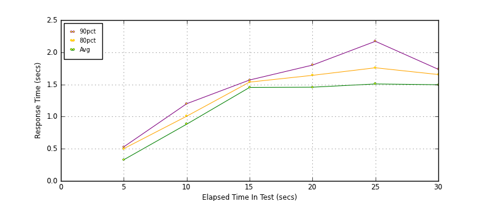
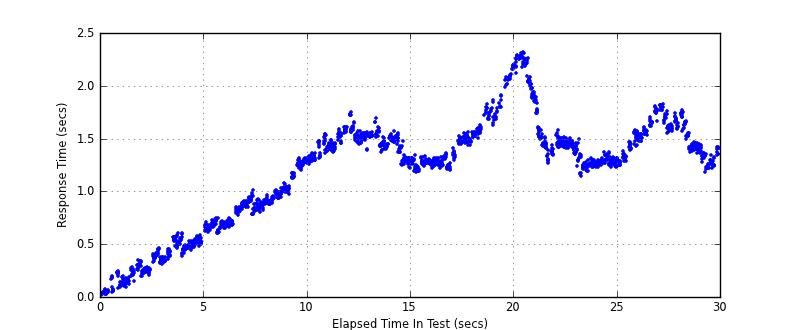
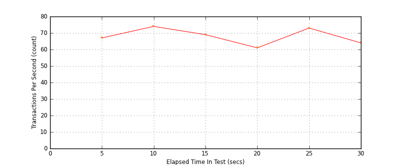

Performance Results Report
Summary
transactions: 2148
errors: 0
run time: 30 secs
rampup: 10 secs
test start: 2014-01-28 15:43:08
test finish: 2014-01-28 15:43:38
time-series interval: 5 secs
workload configuration:
| group name | threads | script name |
|---|
| user_group-1 | 100 | read_user.py |
All Transactions
Transaction Response Summary (secs)
| count | min | avg | 80pct | 90pct | 95pct | max | stdev |
|---|
| 2148 | 0.019 | 1.183 | 1.527 | 1.659 | 1.812 | 2.317 | 0.488 |
Interval Details (secs)
| interval | count | rate | min | avg | 80pct | 90pct | 95pct | max | stdev |
|---|
| 1 | 335 | 67.00 | 0.019 | 0.329 | 0.502 | 0.530 | 0.556 | 0.605 | 0.163 |
| 2 | 371 | 74.20 | 0.602 | 0.882 | 1.006 | 1.200 | 1.275 | 1.315 | 0.185 |
| 3 | 347 | 69.40 | 1.218 | 1.454 | 1.536 | 1.569 | 1.601 | 1.750 | 0.104 |
| 4 | 305 | 61.00 | 1.182 | 1.457 | 1.641 | 1.800 | 2.059 | 2.193 | 0.252 |
| 5 | 366 | 73.20 | 1.141 | 1.507 | 1.759 | 2.171 | 2.247 | 2.317 | 0.320 |
| 6 | 324 | 64.80 | 1.178 | 1.495 | 1.654 | 1.735 | 1.768 | 1.819 | 0.165 |
Graphs
Response Time: 5 sec time-series

Response Time: raw data (all points)

Throughput: 5 sec time-series

Custom Timer: get_tweets
Timer Summary (secs)
| count | min | avg | 80pct | 90pct | 95pct | max | stdev |
|---|
| 2048 | 0.018 | 1.182 | 1.527 | 1.658 | 1.812 | 2.316 | 0.488 |
Interval Details (secs)
| interval | count | rate | min | avg | 80pct | 90pct | 95pct | max | stdev |
|---|
| 1 | 335 | 67.00 | 0.018 | 0.329 | 0.501 | 0.529 | 0.556 | 0.605 | 0.163 |
| 2 | 371 | 74.20 | 0.602 | 0.881 | 1.005 | 1.200 | 1.275 | 1.315 | 0.185 |
| 3 | 347 | 69.40 | 1.218 | 1.453 | 1.536 | 1.568 | 1.601 | 1.749 | 0.104 |
| 4 | 305 | 61.00 | 1.181 | 1.457 | 1.641 | 1.800 | 2.059 | 2.193 | 0.252 |
| 5 | 366 | 73.20 | 1.141 | 1.507 | 1.758 | 2.170 | 2.247 | 2.316 | 0.320 |
| 6 | 324 | 64.80 | 1.178 | 1.495 | 1.653 | 1.735 | 1.767 | 1.818 | 0.165 |
Graphs
Response Time: 5 sec time-series

Response Time: raw data (all points)
Throughput: 5 sec time-series